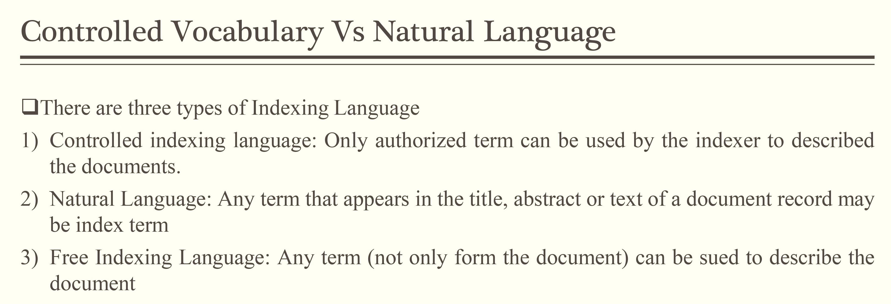
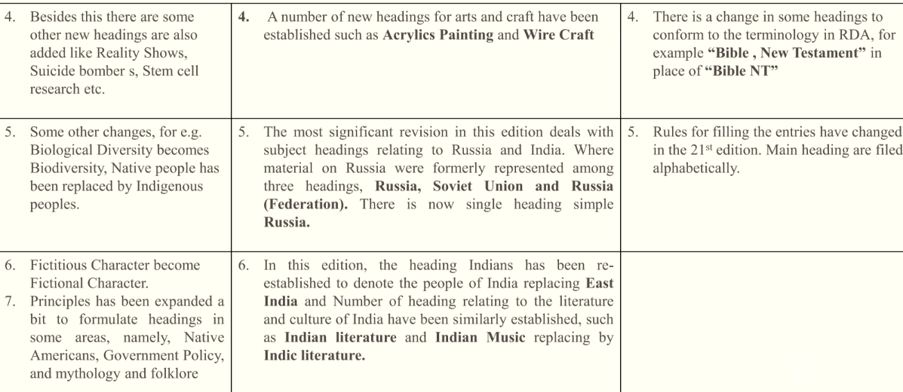

CONTROLLED VOCABULARY
Paper-M-108
21st May 2023
VOCABULARY & CONTROLLED VOCABULARY
WHAT IS VOCABULARY?
Vocabulary is a set of terms (words, codes, etc.) that are used in a specific community
It provides a mechanism for communication (written, oral, or electronic) as the meaning of terms are known & agreed upon by the community members
When a vocabulary is formally managed, it becomes Controlled Vocabulary. Where managed means the terms are stored & maintained using agreed-upon procedures
Procedures should exist for adding terms, modifying terms, & more rarely, deprecating terms from a controlled vocabulary
DIFFERENCES BETWEEN INDEX & VOCABULARY?
| Indexes | CVs | |
|---|---|---|
| End product | index | term list |
| Use | content locator | content tagging, website navigation, search enhancement |
| Project time | weeks | months |
| Methodology | reading | research |
CONTROLLED VOCABULARY (CV)
CV is a carefully selected list of words and phrase, which are used to tag units of information so that they may be more easily retrieved by a search
The terms are chosen by and organized by trained professionals (including Librarians and information scientist) who posses expertise in the subject area
CV terms can accurately describe what a given document is actually about, even if the terms themselves do not occurs within the text
Fully developed CV systems are LCSH, Sears List, Thesaurus etc.
CONTROLLED VOCABULARY (Cont.)
In other words, CV is a collection of terms that are:
- Accepted: Terms must adhere to community practices
- Defined: Terms are precisely characterized. Typically, this means the terms have rigorous definitions
- Managed: In general, there will be a body of experts that create and maintain the CV. The maintenance of CV will involve periodic review, addition of new terms, modification of terms, and occasionally deprecation of terms
CONTROLLED VOCABULARY VS. NATURAL LANGUAGE
CV Vs. Natural Language (Cont.)

CV Vs. Natural Language (Cont.)
CV: PURPOSE, CHARACTERSTICS, CATEGORIES, & TYPES
PURPOSE OF CV
CV can serve several different purposes:
It can help users to find data (also known as a discovery vocabulary)
It can assist in the interpretation of data (also known as usage vocabulary)
It can provide human-understandable meaning (also known as semantic vocabulary)
It can produce machine-readable format information (also known as syntactic vocabulary)
PURPOSE OF CV (Cont.)
CV provide these abilities by:
- Establishing the permissible terms to be used
- Maintaining the proper and agreed-upon spelling of the terms
- Clarifying terms for those who are new to the community
- Eliminating the use of arbitrary terms that can cause inconsistencies and confusion
From the above we can say that CV ensure consistencies in indexing, tagging or categorizing and to guide the user where the desire information is
WITH AND WITHOUT CV

Fig. 1: With & Without CV
CHARACTERISTICS OF CV
Most important characteristics of CV is relationship
Terms in CV are related in certain ways:
- Equivalence Relationship
It is the most basic term relationship in synonyms
It is important to note that context is important in determining synonyms
Example, if you use “automobiles” on your homepage & “cars” on next page, users might get confused. Users might start to wonder if there is a difference between the two terms. Instead you choose “automobiles” & don’t use “cars”.
CHARACTERISTICS OF CV (Cont.)
So, using “automobiles” as “preferred term” & “cars” as variant term that is representing the same concept
There are many examples where alternate terms are used:
- Synonyms (two words with the same meaning, like “jeans” and “dungarees”)
- Homonyms (words that sound the same, but have different meanings, like “bank” the financial institution and “bank” the side of a stream or river)
- Common misspellings
- Changes in content (e.g., countries that change their name or have multiple spellings)
CHARACTERISTICS OF CV (Cont.)
- Identifying “Best Bets” or the most popular pages associated with a certain term
- Connecting a woman’s married name to her maiden name
- Connecting abbreviations to the full word (e.g., NY and New York, the chemical symbol Si with the element Silicon)
Types of Equivalence Relationship:
- There are 2 types of synonym equivalence lists - Synonym rings: They are used in searching behind the scenes as a way to connect various terms of a concept. EG. When someone searches for “Si”, give them all documents with both “Si” & “Silicon”
CHARACTERISTICS OF CV (Cont.)
Types of Equivalence Relationship (Cont.)
- Authority files: When you need to display one of the terms in your navigation and pick one to be a preferred term, then you have an authority file
- Hierarchical Relationship
Terms display hierarchical relationship when one term is broader in meaning than its child terms (which has a narrower meaning)
Pairs of the terms are represented in their super ordinate & subordinate status
CHARACTERISTICS OF CV (Cont.)
Super ordinate term (BT) representing the whole while the subordinate term (NT) representing a member or a part
EG. LIBRARY USERS
- BT Persons
- NT Internet access for library users
- Library catalogs and users
It can help you formulate your homepage navigation. It could improve your searching and browsing. It can help users broaden and narrow their search results quickly by showing them where each set of results fits into the site’s hierarchy
CHARACTERISTICS OF CV (Cont.)
- Associative Relationship
It denotes the relationship between the term that is neither hierarchical nor equivalence
Yet the terms are mentally associated to such an extent that link between them should be made explicit in CV and revel alternative terms that could be used in indexing or retrieval
It is very difficult to define the relationship between the term and therefore to determine between a pairs of terms, some guidelines are follow:
CHARACTERISTICS OF CV (Cont.)
The Associative terms are divided into two categories:
- Terms belonging to the same category. For example Sibling with overlapping meaning, such as ‘Ship’ and ‘boats’
- Terms belong to different categories. The term should be implied when other is used in indexing. For example, an action or product and product of the action. Such as Programming <-> Software
CV CATEGORY & TYPES (Cont.)
- To enable formal management, a controlled vocabulary can be organized in several ways. There are three broad categories of controlled vocabularies:

CV : CLASSIFICATION
CV CLASSIFICATION BY FUNCTIONALITY

FLAT CONTROLLED VOCABULARY
FLAT CV TYPES
- Authority Files
These are the lists of terms that are used to control the variant names for an entity or the domain value for a particular field
EG. names for countries, individuals, organizations
Sometimes within a catalog there are different names or spellings for only one person or subject. This can bring confusion since researchers may miss some information. Authority control is used by cataloguers to collocate materials that logically belong together but which present themselves differently.
FLAT CV TYPES (Cont.)
Records are used to establish uniform titles which collocate all versions of a given work under one unique heading even when such versions are issued under different titles, such as different spelling, pen names etc. The unique header can guide users to all relevant information including related or collocated subjects. Authority records can be combined into a database and called an authority file and maintaining and updating these files as well as “logical linkages” to other files within them is the work of librarians and other information cataloguers.
FLAT CV TYPES (Cont.)
FLAT CV TYPES (Cont.)
- Glossaries
A glossary is a list of terms, usually with definitions
Terms may be from a specific subject field or from a particular work
Terms are defined within a specific environment and rarely include variant meanings
EG. Environmental Protection Agency (EPA), Terms of the Environment, Glossary of Library and Information Science
FLAT CV TYPES (Cont.)
- Dictionaries
Dictionaries are alphabetical lists of words and their definitions
Variant senses are provided where applicable
Dictionaries are more general in scope than are glossaries
They may also provide information about the origin of a word, variants
(by spelling and morphology), and multiple meanings across disciplines - While a dictionary may also provide synonyms and through the definitions, related words, there is no explicit hierarchical structure or attempt to group them by concept
- EG. Oxford English Dictionary, Subject Dictionary
FLAT CV TYPES (Cont.)
- Gazetters
A gazetter is a list of place names
Traditional gazetters have been published as books or have appeared as indexes to atlases
Each entry may also be identified by feature type, such as river, city, or school
Geospatially referenced
gazatteers provide coordinates for locating the place on the earth’s surface
The term gazetteer has several other meanings, including announcement publication such as a patent or legal gazetteer
These gazetters are often organized using classification schemes or subject categories
EG U.S. Code of Geographic Names
FLAT CV TYPES (Cont.)
- Code List
- It is consists of a set of codes & meanings used in a specific project
MULTI-LEVEL CONTROLLED VOCABULARY
MULTI-LEVEL CV TYPES
- Subject Headings
This scheme type provides a set of controlled terms to represent the subjects of items in a collection
The main objective of subject cataloguing is to fulfill the subject related needs of the readers
Subject Heading scheme helps the cataloguer/indexer to
summarizing the thought content of the document in to a no. of accepted term
Subject Heading schemes are:
- Medical Subject Headings (MeSH)
- Library of Congress Headings (LCSH)
- SEARS List of Subject Headings
MEDICAL SUBJECT HEADING (MeSH)
MeSH is the controlled vocabulary thesaurus that gives uniformity and consistency to the indexing and cataloging of biomedical literature . It connects all the different ways to express a concept , such as “cancer.”
MeSH are standardized vocabulary of app. 20,000 terms that describe the biomedical concepts covered in the MEDLINE/PubMed database. MEDLINE is directly searchable from PubMed
MeSH consists of a set of terms or subject headings that are arranged in both an alphabetic and a hierarchical structure
MeSH thesaurus is produced by the National Library of Medicine (NLM)
MEDICAL SUBJECT HEADING (MeSH) (Cont.)
When each article is indexed, an indexer at NLM assigns from 5 to 20 headings describing the concepts covered in the article
MeSH headings are powerful searching tools
They locate documents by assigned controlled vocabulary, not free text words, and are independent of the occurrence of specific words in any other field
MeSH headings allow you to retrieve all references to a particular topic, even if different terminology was used in the records
MEDICAL SUBJECT HEADING (MeSH) (Cont.)
- MeSH vocabulary includes several important features. The four most important are:
- Main Headings (MeSH headings/preferred terms/descriptors)
- They represent concepts found in the biomedical literature
- Main headings are generally added or revised in MeSH vocabulary on an annual basis
MEDICAL SUBJECT HEADING (MeSH) (Cont.)
- Subheadings (qualifiers)
They are associated with MeSH main headings to pinpoint the specific aspect of the concept represented by the subject heading
They are a way of grouping together those citations that are concerned with a particular characteristics
of a subject
- EG Liver may be qualified with subheading drug-effects (“Liver-drug-effects”)
MEDICAL SUBJECT HEADING (MeSH) (Cont.)
- Check Tags
These are special use descriptors that do not represent subject matter per se but that reflect parameters or aspects of subject concept
Special efforts in indexing assures that these will be included or “checked” each time they appear as
aspects in an item being indexed
Following list of descriptors must be entered by an indexer for very journal article citation to which they apply
- ANIMAL - HUMANS
- FEMALE - MALE
- ANIMAL - HUMANS
MEDICAL SUBJECT HEADING (MeSH) (Cont.)
- Publication Characteristics (types)
They describe the type of publication being indexed (i.e. format of the publication) or characteristics of the research (i.e. research design)
They are also Publication Type term that describe
what type of organization funded the research
They are of 3 main categories:
- Publication Components (eg. Abstracts)
- Publication Formats (eg. Lectures, Letter)
- Study Characteristics (eg. Clinical Trial, Twin Study)
MEDICAL SUBJECT HEADING (MeSH) (Cont.)
MEDICAL SUBJECT HEADING (MeSH) (Cont.)
- Age Group Headings
- There is a collection of age group heading in MeSH which are assigned whenever someone in that age group is noted in a paper
- All age groups listed in the paper are indexed. Age groups are rarely assigned to major MeSH field
LIBRARY OF CONGRESS SUBJECT HEADING (LCSH)
LCSH came in to existence in the year 1898 by the Library of Congress (LoC), USA and is also maintained by the same
LCSH system was originally designed as a controlled vocabulary for representing the subject and form of the books and serials in the LoC collection
Now it is widely accepted by Libraries & Information Center around the world
LCSH is also known as “Big Red Books”
It consists of 5 volumes and published annually
LCSH (Cont.)
Subject authority records are available online
The last print edition was published in 2016. Access to the continuously revised vocabulary is now available via subscription and free services
At present running edition is 44th (2022)
There were 382,713 authority records in the file as of March 2022
The creation and revision of subject headings is a continuous process. Approximately 4,000 new headings, including headings with subdivisions, are added to LCSH each year
LCSH (Cont.)
Principles of Heading Construction
- Fundamental principles of LCSH
- Structure of subject headings
- Generation of headings & cross references
- Main headings
- Subdivisions
- Pre-coordination & synthesis
- Term relationships
- Scope notes
- Class numbers
LCSH (Cont.)
- Fundamental principles of LCSH
The fundamental principle guiding the development of LoC subject headings system are effective responses to
- User needs
- Uniform heading (one heading per subject - control of synonyms)
- Unique heading (one subject per heading control of homographs)
- Specific & direct entry
- Stability
- Consistency
LCSH (Cont.)
- Structure of Subject Headings
A. Single Concept Headings
- Automobiles
- Botany
- Budget deficits
- Electric
- Interference
- Boards of trade
- Clerks of court
B. Pre-coordinated Multiple-Concept Headings
- Budget in business
- Church & industry
- Earth-rotation
- Biology-Scholarships
LCSH (Cont.)
- Main Headings
It is that part of the subject heading string which represents the main concept without subdivision
Main headings may be categorized according to their functions (topical headings, form headings, & different kinds of proper name headings)
Types & Functions of Main Headings
A. Topical Headings
- It represents a concept or object treated in a bibliographic item. It reflects what the item is about. Eg. Economy, German language, Soldiers as artists
LCSH (Cont.)
B. Form Headings
A form heading reflects the form of the material
There are various forms of reading material in the library. Eg. (a) Bibliographic Form (b) Artistic and Literary Form
Syntax
Topical and form headings
All main headings consist of single nouns or noun equivalents. Noun equivalents may be in the form of adjectives or gerunds or in the form of adjectival phrases, conjunctive phrases, or prepositional phrases
Qualifiers are added to headings when necessary
LCSH (Cont.)
A. Single Noun Headings
Many topical and form headings consist of a single noun or a noun equivalent in the form of a single adjective or gerund
Nouns representing concrete objects are normally in the plural form, and nouns representing abstract concepts appear in the singular. Examples Enzymes, Running, Art, Education, Religion, Philosophies, Deaf, Agriculture
LCSH (Cont.)
B. Phrase Headings
Some concepts that involve two areas of knowledge can be expressed by more or less complex phrases. Example Bible as literature, Freedom of information
There are various types of Phrase Headings which are as follows:
- Adjectival headings: Computer architecture, Social classes
- Conjunctive phrase headings: Children and politics, Boats and boating
- Prepositional phrase headings: Directors of Corporations, Doctor of philosophy degree
- Inverted phrase headings: Children’s literature - Canadian, Education - Higher, Taxation - Exemption from
LCSH (Cont.)
- Subdivisions
- Subdivisions are extensions of the main heading. They normally represent aspects of the main heading
- Topical subdivisions: Intellectual life, Marketing, Religious aspects
- Form subdivisions: Bibliography, Periodicals, Poetry, Tables
- Geographic subdivisions: Geographic subdivision again divided in to two parts namely
Direct Subdivision: Music-Japan, Music-California
Indirect Subdivision: Music-France-Paris, Music-Ontario-Toronto
LCSH (Cont.)
- Chronological subdivisions
- Art, Modern-20th century
- India-History-1800-1899 (19th century)
- France-History-Revolution, 1797-1802
- Lebanon-History-1982-1984
- Poland-Economic conditions-1945-
- United States-History-1945-1953
- Bermuda Islands-Description and travel-1979-
LCSH (Cont.)
- Pre-coordination and synthesis
A heading may contain a single concept or a combination of multiple concepts
The combination may be formed when the heading is being established or when it is assigned to a particular bibliographic item
A. Multiple-concept main headings: Children and politics, Electricity in art, Religious education of teenage boys
B. Headings with Subdivisions: Birth control-Moral and ethical aspects, Cinematography-Electronic equipment, Philosophy and Ancient-Oriental
LCSH (Cont.)
- Term Relationship
- There are four types of term relationships in LCSH
A. Equivalence relationships
USE references are made from unauthorized or non preferred terms to an authorized or preferred heading
UF (Used For) precedes the term not used
The codes USE and UF function as reciprocals
LCSH (Cont.)
B. Hierarchical relationships
LCSH (Cont.)
C. Associative relationships
LCSH (Cont.)
D. General and Specific references
A general reference is a reference made not to specific individual headings but to an entire group of headings, frequently listing one or more headings by way of example
It is denoted by see also (SA)
Example:
Chemistry
- SA headings beginning with the word Chemical
LCSH (Cont.)
- Subject Heading for Special Materials in LCSH
The assignment of subject heading for audiovisual and special instructional materials should follow the same principles that are applied to books
The heading most specifically describing the contents of the material should be used
Example:
American poetry-Periodicals
Tuberculosis-Statistics-Periodicals
Jesus Christ-Travel-Palestine-Maps-To 1800
Accounting-Periodical
LCSH (Cont.)
- Scope Notes
- Notes are provided under some headings in order to define the scope, to explain the relationships among headings, and to assist in the proper application of the headings so that consistency in assigning headings to documents on like subjects may be achieved
A) Definitions
B) Relations to other headings
C) Instructions, explanations
LCSH (Cont.)
- Class Numbers
A Library of Congress Classification number is added to a heading if the caption for the number is identical or nearly identical in scope, meaning, and language to the subject heading, or if the topic is explicitly mentioned in an “Including” note under the caption for the number
Multiple class numbers may be added to a heading when the subject is treated from more than one perspective
For the heading of a subject covered by a span of class numbers, the full span of pertinent class numbers is included
LCSH (Cont.)
DISADVANTAGES
It is American biased
The words that are used in it are the words that are popular in American dialect and which are not popular to Indian conditions
Many discrepancies regarding the subject headings can also be seen in it like
Labor-Labour
Color-Colour
Elevators-Lifts
SEARS LIST OF SUBJECT HEADING
The Sears List of Subject Headings (popularly called the Sears List) is a known tool for assigning standardized subject headings to all types of documents in a general small libraries having up to 20,000 titles in all subjects
Sears List of Subject Headings was first designed in 1923 by Minnie Earl Sears (1873-1933)
and has been continuing with her name
SEARS LIST (Cont.)
It was designed with the objective of small libraries for simple and broader subject headings
The first edition contained only 3200 preferred headings
The 2nd (1926) and 3rd (1933) editions were again edited by her
From fourth to fourteenth came in to exist in between (1939/1991) with addition of new word, modernize the terminology of old ones and so on
But the format continued the same with some new features such as the addition of Abridged DDC numbers
SEARS LIST (Cont.)
- The orientation to the online environment started with the 13th edition (1986) - 15th edition is considered to be a innovative era of Sears. The latest knowledge from information science and information seeking behavior has been deployed to modernize the internal structure and grammar of the sears List
- 16th edition (1997), 17th edition (2000), 18th edition (2004), 19th edition (2007), 20th edition (2010), 21st (2014), 22nd edition (2018), 23rd edition (2022)
- There are some changes has been seen in 15th edition like adoption of thesaurus format by using abbreviations, i.e. NT, BT, RT, USE and SA instead of X,XX etc. It gave every page a new look
SEARS LIST (Cont.)
- Joseph Miler edited till 19th Edition but in later it was edited with the assistance of some associated editor
- Published by HW Wilson

SEARS LIST (Cont.)
Principles of the SEARS list
It is based on the principles of the LoC Subject headings
The principles are:
- Specific Entry
- It means that subject should be entered under its most specific heading, not under the class to which it belongs. For example
- Rose should be entered under “Rose”/“Lotus” not under “flowers”
- Penguin is entered “Penguins” not under Birds or even not under water Birds
SEARS LIST (Cont.)
- Direct Entry
It means that specific headings should be entered directly as the lead point, instead of a subdivision. For example
- Penguin is entered Penguin instead of water birds-penguin
- “Barbie doll” instead of Dolls-Barbie doll.
- Roses instead of Flowers-Roses dolls.
SEARS LIST (Cont.)
- Common Usage
If the word is more than one spelling, then the most popular one chosen for common usage. For example
- Instead of “Ornithology” use Birds
- Instead of “Banquets” use Dinner
- Uniformity
- Uniformity and consistency is essential for maintaining standard.
SEARS LIST (Cont.)
Structure of SEARS List
- Sears list is an alphabetical subject heading {arranged word by word according to ALA Filling Rules (1980)}
- Introductory part including the list of about 500 (common) subdivisions. It describes the brief history and principles of the Sears List
- List of subject headings in alphabetical order given in two columns on every page
SEARS LIST (Cont.)
List of Subject Headings
- All the headings are of two types:
- Non-preferred headings: These headings are those which are not to be used. Such headings are given in light type face print. Each such non-preferred heading is invariably preceded by given a lead
“USE” directing us to the preferred heading, e.g.
- Cyclopedias
- Use Encyclopedias and Dictionaries
- Cyclotron
- Use Cyclotrons
- Cytology
- Use Cells
- Dairy farming
- Use Dairying
SEARS LIST (Cont.)
- Preferred headings: They are authorized term represented in a bold face for use against the document content
- These headings are broadly categorized e.g. ideas, objects, places, processes and relationships including DDC class number, scope notes, instruction for its further subdivision
- The concepts and relations of words are mention by NT, BT and RT. Example
Dairying
UF Dairies
Dairy farming
Dairy industry
BT Agriculture
- Livestock industry
NT Dairy cattle
- Milk
SEARS LIST (Cont.)
SEARS LIST (Cont.)
SEARS LIST (Cont.)
SEARS LIST (Cont.)
SEARS LIST (Cont.)
SEARS LIST (Cont.)
TAXONOMY
It is the classification of entities in an ordered system that indicates natural relationships
Thus, taxonomy is a controlled vocabulary used to describe or characterize explicit concepts of information, fur purpose of capture, management, & presentation
TAXONOMY (Cont.)
TAXONOMY (Cont.)
RELATIONAL CONTROLLED VOCABULARY
THESAURUS
THESAURUS (Cont.)
THESAURUS (Cont.)
THESAURUS (Cont.)
THESAURUS (Cont.)
THESAURUS (Cont.)
ONTOLOGY
ONTOLOGY (Cont.)
A defined data model that describe structured and unstructured information through
- entities
- their properties
- the way they related to one another
Ontologies provides context
Effective ontologies require a deep understanding of the knowledge domain
Example: Digital Library
SEMANTIC WEB
- Connections through Citations: Before the internet, you had scientists and individuals writing long documents that had references to other documents and those references were in the form of citations
- Tedious Job of Finding the Citation (Might not even Accessible to you): As a reader of one of these documents, you read the citation and send out via mail for a copy of the document/visit the library
SEMANTIC WEB (Cont.)
Web 1.0 - Web of Documents: Great invention - Hyperlink!
SEMANTIC WEB (Cont.)
Web 2.0 Application Silos
Application Silos: An application that does not interact with other applications or information systems

SEMANTIC WEB (Cont.)

SEMANTIC WEB (Cont.)
Not just the documents, not just the high-level links between applications but to connect the data at a lower level
So that that the data stored on one application would be shareable and connectable in another app
Go beyond just the document and get at the data level so that specific data elements can be
referenced between documents
SEMANTIC WEB (Cont.)
The main advantage is that you do not have to think about specific document but think about data and information
As Web 1.0 enabled you to not have to think about where the information was sitting you didn’t have to think about the network layer and the machine layer
SEMANTIC WEB (Cont.)
- Similarly, Semantic Web enables you to not have to think about specific document locations
- Semantic Web helps in representing information at a lower level than documents little facts and it connects them